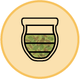
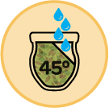
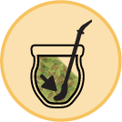
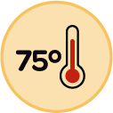

Mateando
Historia
Tipos
Paso a Paso
Contacto
Aquí tienes información importante sobre los beneficios, contraindicaciones y curiosidades del
MATE.

Cargá el mate con yerba en sus ¾ partes.
Cubrilo con la mano y agitalo boca abajo.

Con la yerba a 45° agrega un poco de agua tibia.

Coloca la bombilla en la parte baja y no la muevas.

Cebá siempre con agua a 75 °C sobre la bombilla.